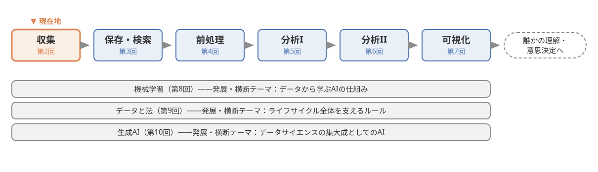
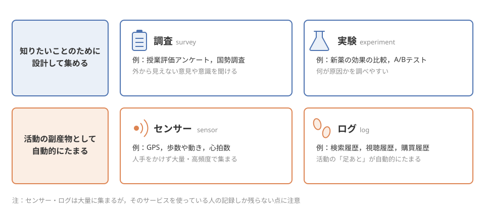
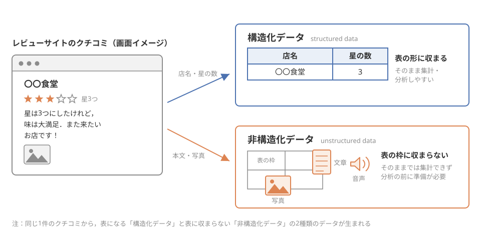
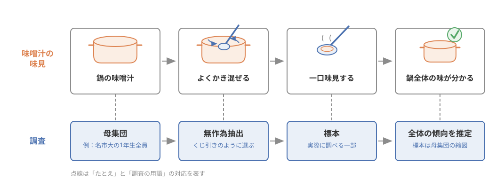
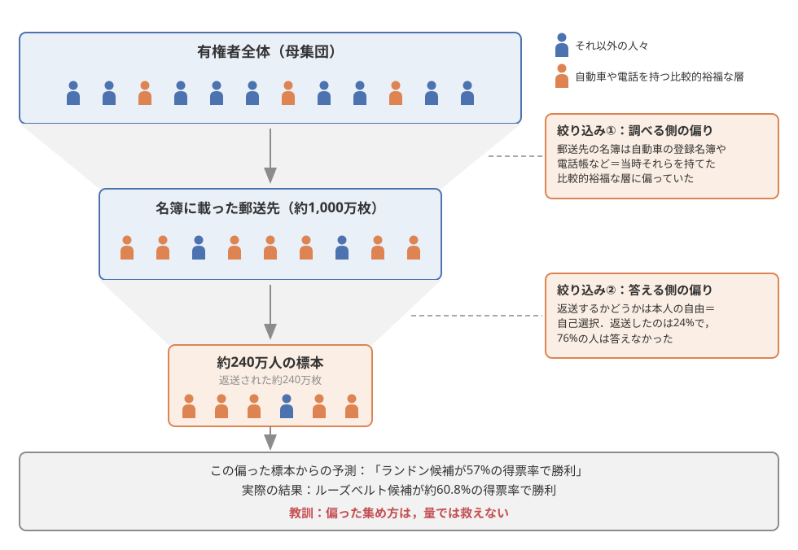

第2回：データの収集#
この回で学ぶこと#
この回の学習目標は，次の5点です．
データの主な集め方（調査・実験・センサー・ログ）と，それぞれの特徴を説明できる
オープンデータやWebスクレイピングなど，すでにあるデータを入手する方法を知る
一次データと二次データ，構造化データと非構造化データの違いを，身近な例で説明できる
標本と母集団の関係を理解し，「一部から全体を知る」ために何が必要かを説明できる
標本の偏り・選択バイアスがなぜ起こるのかを，1936年の世論調査の失敗例に即して説明できる
本題に入る前に，図 7 で本科目における現在地を確認しておきましょう．今回学ぶ「収集」は，データのライフサイクルの出発点です．

図 7 本科目における現在地：今回はデータのライフサイクルの出発点「収集」を学ぶ#
導入：240万人に聞いたのに大外れした世論調査#
データ分析と聞くと，「集めたあとの計算やグラフ」が主役だと思うかもしれません．しかし実は，勝負の大半はデータを集める段階で決まっています．どんなに高度な分析をしても，元のデータが偏っていれば，結論も偏るからです．そのことを歴史上もっとも劇的に示したのが，今回の中心事例である1936年のアメリカ大統領選挙の世論調査です．
事例：1936年，Literary Digest誌の世論調査の失敗
1936年のアメリカ大統領選挙は，現職のルーズベルト候補（民主党）と，対抗馬のランドン候補（共和党）の争いでした．当時の人気雑誌Literary Digest（リテラリー・ダイジェスト）誌は，読者らに向けて約1,000万枚もの模擬投票用紙を郵送し，約240万枚の回答を回収するという，空前の規模の世論調査を行いました．240万人分の回答というのは，現代の世論調査（多くは千〜数千人規模）と比べても桁違いの大きさです．
この膨大なデータをもとに，同誌は「ランドン候補が57%の得票率で勝利する」と予測しました．ところが選挙の結果は正反対でした．実際に勝ったのはルーズベルト候補で，得票率は約60.8%．ランドン候補が勝てたのはメイン州とバーモント州のわずか2州だけで，勝敗を決める選挙人団の数は523対8という歴史的な大差でした [Squire, 1988]．
240万人という膨大な人数に聞いたのに，なぜ予測は大外れしたのでしょうか．
この「なぜ」の答えは，この章を読み終える頃には自分の言葉で説明できるようになっているはずです．そして重要なのは，これが90年前の昔話ではないということです．「SNSのアンケートで10万人が回答した」「レビューサイトで星4.5の高評価」——みなさんが毎日目にするこうした数字にも，Literary Digest誌とまったく同じ落とし穴がひそんでいます．今回は，データがどこから来るのかを整理したうえで，「集め方」が結果をどう歪めるのかを学びます．
データはどこから来るのか#
第1回で見たように，現代社会ではあらゆる場面でデータが生まれています．では，分析に使われるデータは，そもそもどうやって集められているのでしょうか．まずは集め方の代表的な型を整理します．集め方の違いは，そのデータの性質（何が分かって，何が分からないか）を決める，とても重要なポイントです．
集め方の4つの型：調査・実験・センサー・ログ#
データの集め方は，大きく4つの型に分けて考えると見通しがよくなります．
1つめは調査（survey）です．人に質問して答えてもらう方法で，アンケートやインタビューがその代表です．みなさんも，授業後の授業評価アンケートに答えたり，駅前で街頭インタビューを受けたり，SNS上の「どっち派？」投票に参加したりしたことがあるでしょう．国が5年ごとに行う国勢調査も，全国民を対象とした巨大な調査です．調査の強みは「人の意見や意識など，外から見えないこと」を直接聞ける点ですが，後で見るように「誰に聞いたか」「誰が答えてくれたか」によって結果が大きく変わるという弱点があります．
2つめは実験（experiment）です．条件を人為的に変えて，結果を比較する方法です．たとえば新薬の開発では，薬を飲むグループと飲まないグループに分けて効果を比べます．身近なところでは，ネットショッピングのサイトが「購入ボタンの色を赤にした画面と緑にした画面をユーザーにランダムに見せて，どちらがよく押されるか比べる」という実験（A/Bテストと呼ばれます）を日常的に行っています．実験の強みは，条件をそろえて比較するので「何が原因で結果が変わったのか」を調べやすい点です．この設計の考え方は，実験計画法という分野で深く学べます．
3つめはセンサー（sensor）です．機械が自動的に測定して記録する方法です．スマートフォンには，GPS（位置），加速度センサー（歩数や動き），気圧センサーなど多くのセンサーが入っていて，持ち歩くだけでデータが生まれています．ほかにも，気象観測，交通量の計測，スマートウォッチの心拍数など，例は無数にあります．センサーの強みは，人手をかけずに大量・高頻度でデータを集められる点です．
4つめはログ（log）です．サービスやシステムの利用の記録で，人が活動した「足あと」が自動的にたまっていくものです．検索エンジンの検索履歴，動画サイトの視聴履歴，ネットショッピングの購買履歴，コンビニのレジ（POS）の販売記録などがログの例です．みなさんが動画サイトで「おすすめ」される動画は，膨大な視聴ログの分析から選ばれています．
前半の2つ（調査・実験）は，「知りたいことのために，設計して集める」データです．一方，後半の2つ（センサー・ログ）は，「活動の副産物として，自動的にたまる」データだといえます．センサーやログのデータは量が膨大で魅力的ですが，「そのサービスを使っている人の記録しか残らない」という点で，やはり偏りと無縁ではありません．この点は後ほど詳しく見ます．
ここまでの4つの型を，「設計して集めるか，副産物としてたまるか」という視点で整理したのが 図 8 です．

図 8 データの集め方の4つの型：「設計して集める」調査・実験と，「副産物として自動的にたまる」センサー・ログ#
すでにあるデータを使う：オープンデータとWebスクレイピング#
データは，自分でゼロから集めるだけでなく，「すでに誰かが集めたもの」を入手して使うこともできます．その代表的な入手経路を2つ紹介します．
1つめはオープンデータ（open data）です．オープンデータとは，誰でも無償で入手でき，利用や再配布が認められた形で公開されているデータのことです．特に，国や自治体が公開する統計データが有名で，日本では政府統計のポータルサイト「e-Stat」から，人口・産業・家計など膨大な公的統計をダウンロードできます．名古屋市をはじめ多くの自治体も，避難所の場所や施設の一覧などのデータを公開しています．レポートや卒業研究で「データがほしい」と思ったとき，まずオープンデータを探してみるのは非常によい習慣です．
2つめはWebスクレイピング（web scraping）です．これは，プログラムを使ってWebページから情報を自動的に収集する技術です．たとえば「レビューサイトから飲食店の評価とクチコミを自動で集める」「ニュースサイトから記事の見出しを毎日集める」といったことができます．人手でコピー＆ペーストしていたら何日もかかる作業を，プログラムなら短時間でこなせます．
警告
Webスクレイピングは便利な技術ですが，何でも自由に集めてよいわけではありません．Webサイトには利用規約があり，自動収集を禁止しているサイトも多くあります．また，集めた文章や画像には著作権があり，短時間に大量のアクセスを行えばWebサイトに迷惑（サーバへの過剰な負荷）をかけることにもなります．「技術的にできること」と「やってよいこと」は別問題です．このルールの話は，第9回「データと法」で詳しく扱います．
誰が集めたのか：一次データと二次データ#
ここまでの集め方を，「誰が集めたのか」という視点で整理し直してみましょう．
一次データ（primary data）とは，自分（自分の組織）が，自分の目的のために直接集めたデータのことです．たとえば，学園祭の模擬店の出店計画のために，自分たちで学生100人にアンケートをとったら，それは一次データです．目的に合わせて質問や対象を設計できるので，知りたいことにぴったり合ったデータが得られます．そのかわり，集めるのに手間・時間・費用がかかります．
二次データ（secondary data）とは，他の誰かが（多くの場合，別の目的で）集めたデータを，再利用するものです．先ほどのオープンデータや，企業が販売する市場調査データ，Webスクレイピングで集めた情報などは，使う側から見れば二次データです．手間をかけずに大規模なデータを使えるのが強みですが，注意も必要です．そのデータが「いつ・誰を対象に・どんな方法で・どんな定義で」集められたのかを，必ず確認しなければなりません．たとえば「若者のSNS利用率」という二次データがあっても，「若者」が13〜19歳を指すのか18〜29歳を指すのか，調査が5年前のものか去年のものかで，意味はまったく変わります．二次データを使うことは，「集め方を他人に任せる」ことでもあるのです．
どんな形をしているか：構造化データと非構造化データ#
集まったデータを，今度は「形」の視点で分類してみましょう．
構造化データ（structured data）とは，表の形（行と列）に整理されたデータのことです．行が1件1件の記録（たとえば学生1人）に対応し，列が項目（学籍番号・氏名・学部など）に対応します．履修者名簿，売上の一覧表，アンケートの選択式回答の集計表などが典型例です．構造化データは，表計算ソフトやプログラムでそのまま集計・分析しやすいという大きな利点があります．
一方，非構造化データ（unstructured data）とは，表の形に収まらないデータのことです．SNSの投稿文，レビューサイトのクチコミの本文，写真や動画，音声などがその例です．第1回で学んだビッグデータの3Vのひとつ「Variety（多様性）」は，まさにこうした非構造化データの増加を指していました．現代のデータの多くは非構造化データだといわれており，たとえば「クチコミの星の数」（構造化データ）だけでなく「クチコミの文章そのもの」（非構造化データ）を分析できれば，「星3つだけど実は好意的な感想」といった深い情報が読み取れます．ただし，非構造化データはそのままでは集計できないため，保存のしかたにも分析の前の準備にも工夫が必要です．この話は第3回（保存と検索）と第4回（前処理）で改めて登場します．
同じ1件のクチコミから「星の数」という構造化データと「本文や写真」という非構造化データの両方が生まれる様子を，図 9 にまとめました．

図 9 同じ1件のクチコミから生まれる2種類のデータ：店名や星の数は表に収まり（構造化データ），本文や写真は表の枠に収まらない（非構造化データ）#
一部から全体を知る：標本と母集団#
ここからが今回の後半の主役です．データを集めるとき，私たちはほとんどの場合，「知りたい対象の全員・全部」を調べることはできません．そこで登場するのが，標本と母集団という考え方です．
母集団と標本#
母集団（population）とは，本当に知りたい対象の全体のことです．そして標本（sample）とは，母集団の中から実際に調べるために取り出した一部のことです．
たとえば「ある大学の1年生は，1日にどれくらいSNSを使っているか」を知りたいとします．このとき母集団は「その大学の1年生全員」です．全員に答えてもらえれば理想的ですが，現実には難しいので，たとえば100人を選んで調べます．この100人が標本です．母集団の全員を調べる調査を全数調査と呼び（国勢調査が代表例です），一部だけを調べる調査を標本調査と呼びます．世の中の調査のほとんどは標本調査です．
「一部しか調べていないのに，全体のことが分かるの？」と思うかもしれません．実は，日常生活でもみなさんは同じことをしています．味噌汁の味見です．鍋全体（母集団）を飲み干さなくても，一口（標本）で味は分かります．ただし，そのためには大事な条件があります．味見の前に，鍋をよくかき混ぜることです．かき混ぜずに上澄みだけをすくえば，味噌が沈んだ鍋の味は正しく分かりません．
調査における「かき混ぜる」に当たるのが，無作為抽出（random sampling）です．母集団の全員が同じ確率で選ばれるように，くじ引きのようにランダムに標本を選ぶ方法です．無作為に選ばれた標本は，母集団の「縮図」になることが期待できます．驚くべきことに，母集団が何千万人であっても，きちんと無作為に選ばれた数千人程度の標本があれば，全体の傾向をかなり正確に推定できることが統計学で知られています．この「一部から全体を推し量る」理論は，第5回で紹介する推測統計や，統計学の科目で本格的に学びます．
味噌汁の味見と調査の対応関係を 図 10 にまとめました．「鍋をよくかき混ぜる」ことが「無作為抽出」に当たる，という対応が最大のポイントです．

図 10 味噌汁の味見でつかむ標本調査：「よくかき混ぜる」が無作為抽出，「一口」が標本に当たる#
標本の偏りと選択バイアス#
問題は，標本が母集団の縮図になっていないとき，つまり「かき混ぜが足りない」ときです．
標本の偏り（sampling bias）とは，標本の性質が母集団の性質からずれてしまっていることをいいます．偏った標本からどんなに丁寧に計算しても，得られる結論は母集団の姿を正しく映しません．
標本の偏りを生む代表的な原因が，選択バイアス（selection bias）です．選択バイアスとは，「誰がデータに入り，誰が入らないか」が偶然ではなく何らかの仕組みで決まってしまい，その結果として標本が偏ることをいいます（世論調査やビッグデータにおける選択バイアスの概説として，こちらの解説論文があります．そこでは1936年の事例に加えて，1948年の「デューイ，トルーマンを破る」という有名な誤報の事例も紹介されています）．選択バイアスは，大きく2つの場面で生まれます．
1つめは，調べる側の選び方の偏りです．たとえば「市民の意見」を知るために平日の昼間に駅前で街頭インタビューをすると，その時間にその場所を通れる人——通勤・通学者や買い物客など——しか標本に入りません．平日昼間に工場や病院で働いている人の声は，最初から入りようがないのです．
2つめは，答える側の偏りです．こちらは特に，答えるかどうかを本人が決められる調査で起こるため，自己選択バイアス（self-selection bias）とも呼ばれます．SNSのアンケートに答えるのは「そのアカウントをフォローしていて，かつ答えたいと思った人」だけです．レビューサイトに投稿するのは「わざわざ書き込みたいほど，強い感想を持った人」に偏りがちです．とても満足した人と，とても不満だった人は書き込みますが，「普通だった」大多数の人は何も書きません．星の平均点が，利用者全体の平均的な満足度とずれるのはこのためです．
警告
「回答数が多い」ことと「正しい」ことは別問題です．SNSで10万人が回答したアンケートよりも，無作為に選ばれた千人への調査のほうが，母集団の姿を正しく映すことは珍しくありません．データの価値は量だけでは決まらず，どう集められたかで決まります．ニュースやSNSで「〇万人が回答！」という調査結果を見たら，回答数に感心する前に「誰が対象で，誰が答えたのか」を考える習慣をつけてください．
センサーやログのデータも例外ではありません．たとえばスマートフォンのアプリから集めた人流データには，「スマートフォンを持ち，そのアプリを入れている人」の動きしか記録されません．高齢者や子どもの動きは実際より少なく見えるかもしれないのです．「自動的に集まった膨大なデータ」は一見客観的に見えますが，そこに誰が入っていないかを常に問う必要があります．
Literary Digestの失敗を数字で読み解く#
それでは，導入で紹介したLiterary Digest誌の失敗を，ここまで学んだ言葉を使って読み解いていきましょう．あわせて，実際の数値を簡単なプログラムでグラフにして確かめてみます（この事例を実際にデータ分析の教材として深く活用する試みも報告されています [Chance et al., 2024]）．コードは読んで眺めるだけで大丈夫です．できあがったグラフは，マウスを重ねると正確な値を確かめられます．
まず，ライブラリを読み込む準備をします．
郵送1,000万枚，返送240万枚#
Literary Digest誌は約1,000万枚の模擬投票用紙を郵送し，返送されたのは約240万枚でした．まず，この2つの数を並べて，回答率を計算してみましょう．
# 郵送した枚数と返送された枚数（単位：万枚）
digest = pd.DataFrame(
{"枚数（万枚）": [1000, 240]},
index=["郵送した投票用紙", "返送された投票用紙"],
)
# 回答率（返送 ÷ 郵送）を計算する
kaito_ritsu = 240 / 1000 * 100
print(f"回答率：{kaito_ritsu:.0f}%")
# 棒グラフで比べる
fig = go.Figure(
go.Bar(
x=digest.index,
y=digest["枚数（万枚）"],
marker_color=["#4C72B0", "#DD8452"],
text=[f"{v}万枚" for v in digest["枚数（万枚）"]], # 棒の上に枚数を表示
textposition="outside",
width=0.5,
)
)
fig.update_layout(
title="Literary Digest誌の模擬投票（1936年）：郵送数と返送数",
yaxis_title="枚数（万枚）",
yaxis_range=[0, 1150],
width=600,
height=400,
)
from IPython.display import HTML
HTML(fig.to_html(include_plotlyjs="cdn", full_html=False))
回答率：24%
返送されたのは，郵送した枚数の24% にすぎません．裏を返せば，76%の人は答えなかったということです．240万人という数字だけを見ると圧倒的ですが，「答えなかった760万人はどんな人たちだったのか」という視点を持つと，見え方が変わってきます．
予測と結果はどれだけ違ったか#
次に，予測と実際の選挙結果を並べてみます．同誌の予測は「ランドン候補が得票率57%で勝利」，実際の結果は「ルーズベルト候補が得票率約60.8%で大勝」でした．勝敗を決める選挙人団の数では，523対8という大差です．
# 2つのグラフを横に並べる
fig = make_subplots(
rows=1,
cols=2,
subplot_titles=("予測と実際で勝者が入れ替わった", "実際の結果は523対8の歴史的大差"),
)
# 左：予測された勝者と実際の勝者の得票率
labels1 = ["予測での勝者<br>ランドン候補", "実際の勝者<br>ルーズベルト候補"]
values1 = [57.0, 60.8]
fig.add_trace(
go.Bar(
x=labels1,
y=values1,
marker_color=["#DD8452", "#4C72B0"],
text=[f"{v}%" for v in values1],
textposition="outside",
width=0.5,
),
row=1,
col=1,
)
fig.add_hline(y=50, line_dash="dash", line_color="gray", line_width=1, row=1, col=1) # 過半数の目安（50%）
fig.update_yaxes(title_text="得票率（%）", range=[0, 75], row=1, col=1)
# 右：選挙人団の獲得数（勝敗を決める数）
labels2 = ["ルーズベルト候補", "ランドン候補"]
values2 = [523, 8]
fig.add_trace(
go.Bar(
x=labels2,
y=values2,
marker_color=["#4C72B0", "#DD8452"],
text=values2,
textposition="outside",
width=0.5,
),
row=1,
col=2,
)
fig.update_yaxes(title_text="選挙人団の獲得数", range=[0, 600], row=1, col=2)
fig.update_layout(width=900, height=400, showlegend=False)
from IPython.display import HTML
HTML(fig.to_html(include_plotlyjs="cdn", full_html=False))
左のグラフを見ると，「勝者が入れ替わった」という失敗の大きさが分かります．予測では「ランドン候補が57%で勝つ」はずだったのに，実際にはルーズベルト候補が約60.8%を得て勝ちました．単に数%外れたのではなく，勝敗の予想そのものが正反対だったのです．
なぜ外れたのか：二重の偏り#
失敗の原因は，今回学んだ言葉でいえば選択バイアスによる標本の偏りです．しかも，偏りは二重に生じていました [Squire, 1988]．
第一に，調べる側の選び方の偏りです．同誌が投票用紙の送り先を選ぶのに使ったのは，自誌の読者名簿に加えて，自動車の登録名簿や電話帳などでした．現代の感覚では気づきにくいのですが，1936年のアメリカは世界恐慌のまっただ中で，自動車や電話を持てたのは比較的裕福な人々でした．そして当時，裕福な層は共和党のランドン候補を支持する傾向がありました．つまり，1,000万枚という膨大な郵送先は，そもそも有権者全体の縮図になっていなかったのです．
第二に，答える側の偏りです．返送するかどうかは受け取った人の自由でしたから，これは自己選択の状況です．返送率は24%にとどまり，返送した人々と返送しなかった人々のあいだで支持傾向が異なっていました．Squireの分析によれば，この回答した人の偏り（非回答の偏り） は，名簿の偏りと並ぶ——むしろそれ以上に深刻な——失敗の原因でした [Squire, 1988]．
この二重の偏りの構造を 図 11 にまとめました．有権者全体から標本にいたる途中で，標本が二段階で偏っていったことが分かります．

図 11 二重の選択バイアス：有権者全体が「偏った名簿」と「自己選択」を経て約240万人の偏った標本になるまで#
ここから得られる教訓は明快です．偏った集め方は，量では救えない．240万という空前の回答数をもってしても，偏りの影響は消えるどころか，「大規模だから信頼できそう」という誤った安心感を生む分，かえって危険でした．皮肉なことに，同じ選挙で，ギャラップという調査者ははるかに少人数の，しかし偏りを抑える工夫をした調査でルーズベルト候補の勝利を言い当てています．この対比が，現代まで続く「量より集め方」という世論調査の大原則を打ち立てました．
注釈
発展：偏りは補正できるか——「悪い標本」で終わらせない
この事例は長らく「偏った標本の失敗例」として語られてきましたが，話はそれで終わりではありません．LohrとBrickは2017年の論文で，当時のデータを掘り起こして再分析し，回答者の構成のずれを重み付け（weighting）で補正すれば，同じデータからでも予測を大きく改善できたことを示しました [Lohr and Brick, 2017]．たとえば「標本の中で裕福な層が実際の有権者の構成より多すぎるなら，その層の回答の重みを軽くして集計し直す」という考え方です．
実際，現代の世論調査では，回答者の性別・年齢・地域などの構成を母集団に合わせて調整する補正が標準的に行われています．ただし，補正は万能ではありません．何がどう偏っているかが分からなければ補正のしようがなく，補正には「偏り方についての仮定」が必要だからです．まず集め方の設計で偏りを防ぎ，防ぎきれない分を補正で補う——これが現代のデータ収集の基本姿勢です．
活用事例：選挙の「当確」速報を支える出口調査#
「集め方の設計」が社会で活きている代表例として，選挙の開票速報を見てみましょう．
選挙の夜，テレビの開票速報では，開票がほとんど進んでいない段階で「当選確実」の速報が次々と出ます．開票率がまだ数%なのに，なぜ当選が分かるのでしょうか．これを支えているのが出口調査です．出口調査とは，投票を終えた人に投票所の出口で「どの候補に投票しましたか」と尋ねる標本調査です．
ポイントは，その集め方が偏りを抑えるように設計されていることです．報道機関は，都合のよい投票所だけでなく，地域の投票傾向を代表するように投票所を選び，そこで「何人おきに1人」といった機械的なルールで対象者に声をかけます．「話しかけやすそうな人にだけ聞く」と偏りが生じるため，調査員の好みが入らないようにするのです．こうして得られた標本は有権者全体の縮図に近くなり，開票を待たずに結果を高い精度で推定できます．まさに，Literary Digest誌の失敗の教訓——量より集め方——を裏返しにした成功例といえます．
もっとも，出口調査にも現代ならではの課題があります．期日前投票をする人が増えると，投票日当日の出口調査だけでは有権者全体を捉えきれませんし，回答を断る人が特定の傾向を持てば，そこにも偏りが生まれます．そのため報道機関は，期日前投票者への調査や電話調査を組み合わせ，補正を重ねて精度を保とうとしています．データの集め方は，一度確立したら終わりではなく，社会の変化に合わせて設計し直し続けるものなのです．
まとめ#
今回は，データのライフサイクルの出発点である「収集」を学びました．要点を振り返ります．
データの集め方には調査・実験・センサー・ログという代表的な型があり，集め方の違いがデータの性質を決める．また，オープンデータの入手やWebスクレイピングによる自動収集という経路もある
データは，自分で集めた一次データと他者が集めた二次データ，表形式の構造化データと表に収まらない非構造化データという視点で整理できる．二次データを使うときは「いつ・誰を・どう」集めたかの確認が欠かせない
多くの調査は，母集団（知りたい全体）から標本（実際に調べる一部）を取り出す標本調査である．標本が母集団の縮図になるためには，無作為抽出のような「かき混ぜる」工夫が必要である
「誰がデータに入るか」が仕組みによって偏る選択バイアスは，標本の偏りを生む．1936年のLiterary Digest世論調査は，約240万人分という空前の量のデータを集めながら，名簿の偏りと回答者の偏りという二重の選択バイアスによって予測を大きく外した [Squire, 1988]．偏った集め方は量では救えない．ただし，偏り方が分かれば重み付けによる補正で改善の余地があることも知られている [Lohr and Brick, 2017]
「誰に・どう聞くか」を設計する方法論は社会調査法で，「条件をどう割り付けて比較するか」は実験計画法で，「標本から母集団をどこまで正確に推し量れるか」は統計学で，それぞれ本格的に学ぶことができます．興味を持った人は，これらの科目への入口として今回の内容を思い出してください．
集めたデータは，次に「貯めて，引き出せる」ようにしなければ活用できません．次回（第3回）は，データの保存と検索を扱います．また，今回学んだ標本の考え方には続きがあります．標本から全体をどこまで正確に推し量れるのか——誤差の大きさをどう見積もり，「偶然でも起こりうる差」とどう区別するのか——は，第6回「データの分析II：推測統計の入口」で詳しく学びます．さらに，今回は「どう集めるか」の技術的な話に絞りましたが，そもそも集めてよいデータなのか，集め方のルール（同意・プライバシー）はどうなっているのかという重要な問題も残っています．これは第9回「データと法」で扱います．
確認問題#
理解の確認のために，3問用意しました．小テストと同じ形式の問い（事例の問題点を考える問題）を含んでいます．まず自分で考えてから，解答を開いてください．
問1．次の(a)〜(d)のデータを，「一次データ／二次データ」と「構造化データ／非構造化データ」の両方の観点で分類しなさい．
(a) 自分のゼミで実施し，表計算ソフトに整理した選択式アンケートの回答一覧
(b) e-Statからダウンロードした人口統計の表
(c) レビューサイトからWebスクレイピングで収集したクチコミの本文
(d) 自分でインタビューして録音した音声データ
解答と解説
(a) 一次データ・構造化データ．自分たちが目的のために集め（一次），行と列の表に整理されている（構造化）
(b) 二次データ・構造化データ．国（他者）が集めた統計を再利用し（二次），表の形をしている（構造化）
(c) 二次データ・非構造化データ．他者（投稿者・サイト）のもとにあるデータを収集して使い（二次），本文は表に収まらない文章（非構造化）
(d) 一次データ・非構造化データ．自分で集め（一次），音声は表形式ではない（非構造化）
「誰が集めたか」（一次／二次）と「どんな形か」（構造化／非構造化）は独立した分類であり，組み合わせは4通りすべてあり得る，という点がポイントです．
問2［事例判断型］．ある大学の学食が，メニューの満足度を調べるために，学食の公式SNSアカウントでアンケートを実施し，1,200件の回答を集めました．結果は「満足・やや満足が合計85%」でした．学食はこの結果から「学生のほとんどが学食に満足している」と結論づけようとしています．この調査の問題点を，「母集団」「標本」「選択バイアス」という言葉を使って説明しなさい．
解答と解説
知りたい対象（母集団）は「その大学の学生全体」です．しかし実際に回答した1,200人（標本）は，「学食の公式SNSをフォローしており，かつ自分から回答しようと思った人」に限られます．公式アカウントをフォローするのはもともと学食をよく利用し好意的な学生に偏っている可能性が高く，さらに回答するかどうかを本人が決める自己選択の仕組みも働いています．つまり，標本に「誰が入るか」が偶然ではなく仕組みによって偏る選択バイアスが生じており，標本は母集団の縮図になっていません．したがって「85%が満足」という数字を学生全体の満足度と解釈することはできません．学食をほとんど使わない学生や不満で離れた学生の声は，この集め方では最初から標本に入りにくいのです．回答数が1,200件と多いことは，この偏りを解消しません．
改善するなら，たとえば全学生から無作為に選んだ学生に回答を依頼する，学食の利用頻度も尋ねて回答者の構成を確認する，といった「集め方の設計」が必要です．
問3［事例判断型］．1936年のLiterary Digest世論調査は，約1,000万枚の投票用紙を郵送し約240万枚を回収したにもかかわらず，選挙結果の予測を大きく外しました．(1) 失敗の原因となった「二重の偏り」とは何か，説明しなさい．(2) 「もっと多くの回答を集めていれば予測は当たったはずだ」という意見は正しいか，理由とともに答えなさい．
解答と解説
(1) 第一の偏りは調べる側の選び方の偏りです．郵送先の名簿（自誌の読者・自動車の登録名簿・電話帳など）が，世界恐慌下で自動車や電話を持てる比較的裕福な層に偏っており，郵送先の時点で有権者全体の縮図になっていませんでした．第二の偏りは答える側の偏り（非回答の偏り） です．回答率は24%にとどまり，返送した人々の支持傾向は返送しなかった人々と異なっていました [Squire, 1988]．
(2) 正しくありません．偏りは標本の「選ばれ方の仕組み」から生じているため，同じ集め方のまま回答数を増やしても，偏った標本が大きくなるだけで，母集団とのずれは解消されないからです．偏った集め方は量では救えない——これがこの事例の最大の教訓です．なお，偏りの構造が分かっている場合には，重み付けによる補正で予測を改善できた可能性が後の研究で示されていますが [Lohr and Brick, 2017]，それは「量を増やす」こととは別の対処である点に注意してください．
さらに学ぶために#
今回のテーマを深めるための文献です．事例 → 解説 → 原典の順に読み進めるのがおすすめです．
【事例】Beth Chance, Andrew Kerr & Jett Palmer, "Taking the Next Step in Exploring the Literary Digest 1936 Poll," Journal of Statistics and Data Science Education, 32(4), 2024 [Chance et al., 2024]．Literary Digest調査のデータを実際に取得・整形・可視化しながら標本の偏りと補正を学ぶ授業活動の設計例です．オープンアクセスで全文を読めます：https://www.tandfonline.com/doi/full/10.1080/26939169.2024.2395505
【解説・サーベイ】"Impact of Biases in Big Data," arXiv:1803.00897, 2018．1936年のLiterary Digest事例と1948年の「デューイ，トルーマンを破る」誤報事例を含む，選択バイアスとビッグデータの偏りの概説です．全文：https://arxiv.org/abs/1803.00897
【解説・サーベイ】Sharon L. Lohr & J. Michael Brick, "Roosevelt Predicted to Win: Revisiting the 1936 Literary Digest Poll," Statistics, Politics and Policy, 8(1), 65–84, 2017 [Lohr and Brick, 2017]．「悪い標本の失敗例」という単純な教訓を超えて，重み付け補正による改善可能性まで踏み込んだ再分析です．DOI: https://doi.org/10.1515/spp-2016-0006
【原典】Peverill Squire, "Why the 1936 Literary Digest Poll Failed," Public Opinion Quarterly, 52(1), 125–133, 1988 [Squire, 1988]．失敗の原因を名簿の偏りと非回答の偏りに分けて実証的に分析した古典です．DOI: https://doi.org/10.1086/269085